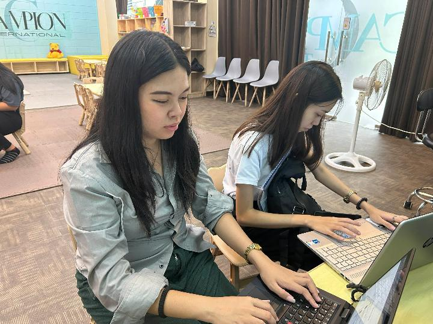
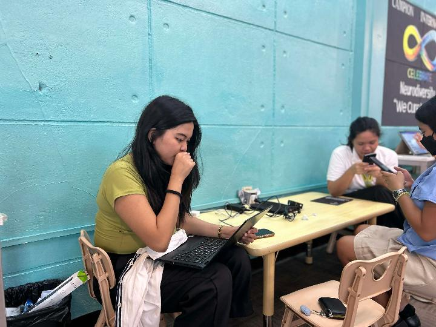
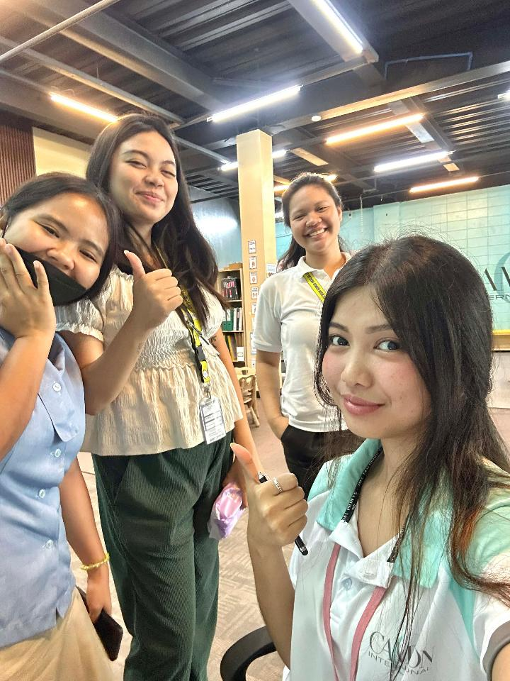
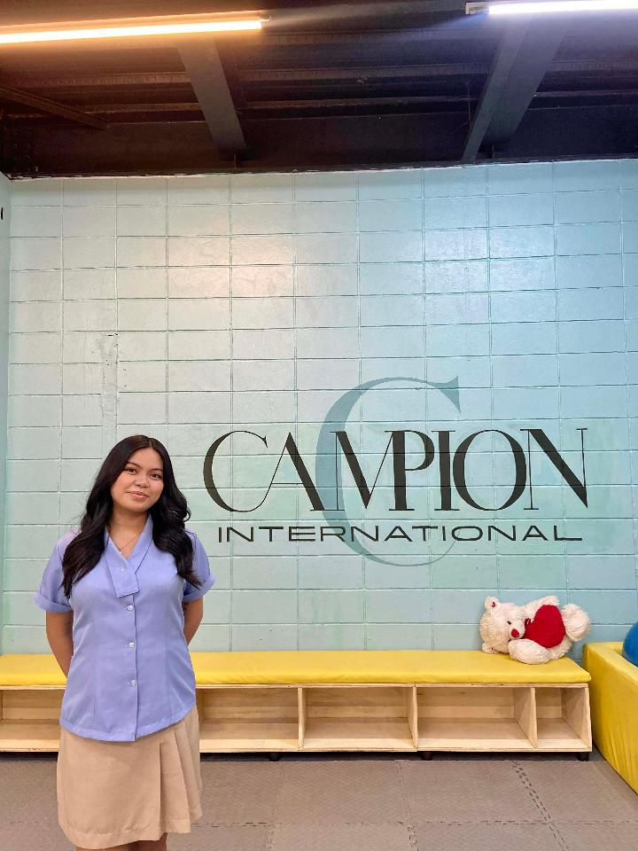
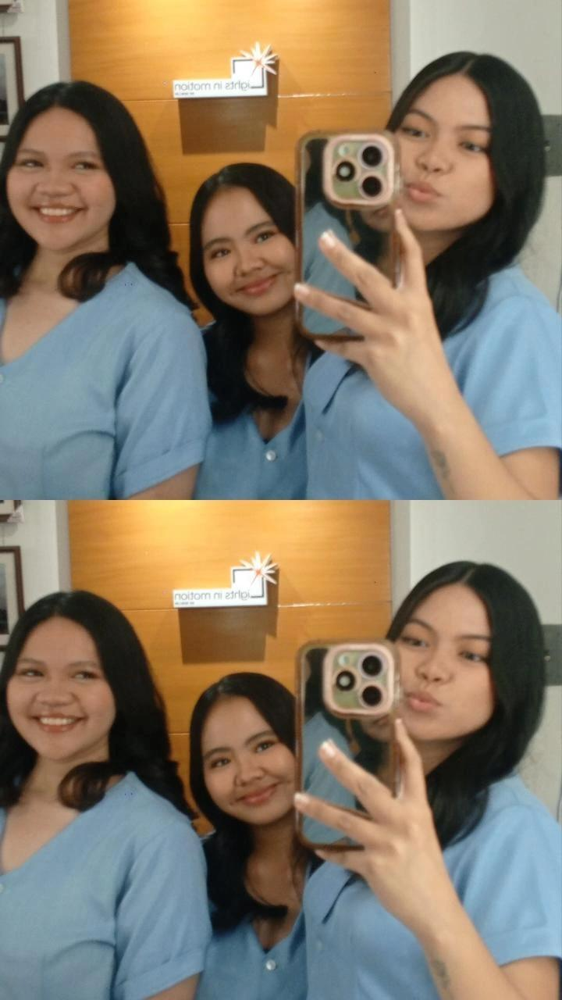

My Senior High School days were a time of growth, learning, and self-discovery. I faced challenges that tested my resilience and determination, but I also experienced moments of joy and accomplishment that shaped who I am today.
During my time in Senior High School, I was actively involved in various extracurricular activities, which allowed me to develop leadership skills and build lasting friendships. I also had the opportunity to explore my interests and passions, which helped me gain a clearer understanding of my future goals.


These pictures was taken during my OJT experience at Campion International. It was a memorable experience because I was able to experience what it was like to work in a professional environment. I also learned how to communicate with other people and become more responsible with my tasks.

My last day of OJT was a bittersweet moment. I was sad to leave my colleagues and the company, but I was also proud of what I had accomplished during my time there. I learned so much and gained valuable experience that will help me in my future career.


My graduation photoshoot was a special moment for me. It was a celebration of all the hard work and dedication that I had put into my Senior High School journey. I will always cherish these memories and the friendships that I made during this time.
We also had a mini photoshoot at our OJT office with our friends. We took pictures together and enjoyed the moment while remembering the time we spent during our OJT. It was a simple moment, but it became one of the memories that I will always treasure.
Looking at these pictures now makes me remember how much we enjoyed being together. From studying in school to completing our OJT, we experienced many things together. These moments made my Senior High School journey more memorable and meaningful.
One of the memorable parts of my SHS experience was working with classmates on different activities and projects.
My favorite part was learning practical skills that I can use in the future, especially skills related to Information Technology.